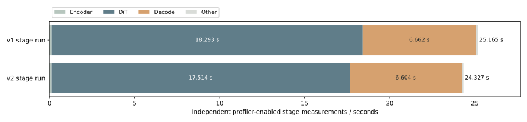
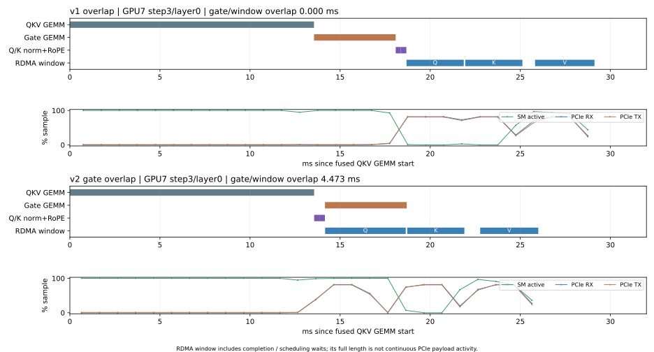
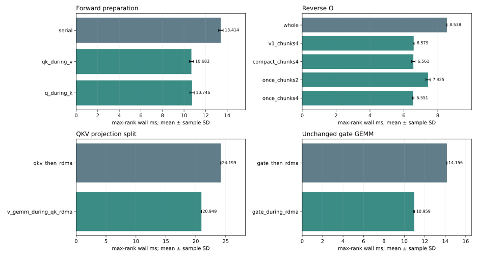

H3 / BF16 / SM120 × 8 / LOSSLESS GATE OVERLAP
把 gate GEMM 放入 Q/K 传输期间
沿用相同的 Cake attention、BF16 主干线性层、Q/K 预处理与四段 O 重叠，只改变 Gc 投影的执行 stream。精度、矩阵形状、权重、通信字节数及 RDMA 完成协议保持一致。
相对同轮 v1 对照，正常请求耗时下降 3.09%（0.777 s）；相对前序 BF16 原调度累计下降 5.52%。单 prompt、seed 1101、362 帧，每组预热一次并正式测三次。该组全部正式视频与音频文件逐字节一致。
v2 gate 重叠
默认只播放 v1 音轨；两个 MP4 的 SHA256 完全相同。
完整请求与独立阶段计时

| 方法 | 无 profiler E2E / s | 三个样本 / s |
|---|---|---|
| v1 重叠，固定编译配置 | 25.118 | 25.141, 25.082, 25.130 |
| v2 加入 gate GEMM 重叠 | 24.340 | 24.408, 24.272, 24.341 |
| 阶段 | 前序 v1 / s | v2 / s |
|---|---|---|
| Encoder | 0.123 | 0.122 |
| DiT | 18.293 | 17.514 |
| Decode total | 6.662 | 6.604 |
| Video VAE path | 6.100 | 6.008 |
| Audio VAE | 0.129 | 0.129 |
阶段基线来自前序 v1 的独立计时，v2 单独采集。Video/Audio VAE 已包含在 Decode 内，不能再次求和。性能结论使用关闭 profiler 的正常请求。
实际完整模型 GPU 7 · 第 3 步第 0 层

v2 gate 通过 NVTX 和 CUDA API 关联定位，v1 两个 GEMM 按源码顺序归属。从 QKV 投影开始到最后一个前向 RDMA 窗口结束，v1 为 29.115 ms，v2 为 25.997 ms。Gate 与通信窗口重叠 4.473 ms；窗口是前后 barrier 之间的区间，也包含完成及调度等待，不代表整个区间 PCIe 持续搬运。指标曲线是单个采样点，不是区间平均。Nsight 耗时不用于端到端加速结论。
下载 v2 原生 Nsight传输带宽的边界
各 GPU 自动选择不同的邻近 400 Gb/s RDMA 端口。前序基线 GPU 7 的 QKV 有效发送率为 47.44 GB/s，约为单端口名义 50 GB/s 的 94.9%。在相同载荷下，单纯提升带宽的余量有限；这些是逻辑载荷与端口速率的比较，不是把 PCIe 的单个采样值当成平均利用率。
Gc 与 Gf
大 GEMM：X [11992,5376] × Wqkvᵀ [5376,21504]，一次输出 Q/K/V。小 GEMM：X × Wgateᵀ [5376,7168]，输出 Gc。
此 H3 路径执行 O = Oc ⊙ Gc + Of，即 Gf = 1，没有独立的 Gf 投影。v2 保留原 BF16 gate GEMM 与合并时的 BF16 乘法、加法舍入。
无损还需要固定编译选核
最初新缓存下的 v1 对照在关闭 gate 优化时也改变了输出。检查发现六处 RMSNorm 归约配置不同，例如 R0_BLOCK 从 8192 变为 4096，浮点求和顺序随之变化。使用前序编译缓存的副本恢复了原始视频。
本页正式 A/B 固定并检查全部原有选核配置；初次缓存实验作为诊断记录保留，不混入性能均值。无损结论限定于相同编译配置、模型和测试输入，尚未覆盖任意 batch、分辨率或长时间服务。
其他候选的八卡微测

合成 H3 形状，真实 RDMA；8 个交错试验，每个试验 8 次，均值为每次测量八卡最慢的墙钟时间。每种可用方案先在八卡、三种输入模式上逐位核对。仅 gate 调度集成并完成上述完整模型验证。
提前处理 Q 未显示进一步收益；coarse tail 只传一次可少传 10,160,640 字节/卡/层，但耗时改善很小。8 段 O 的 gate 结果一致、O 投影结果不逐位一致，已排除。QKV 拆分微测通过逐位检查并有收益，尚未纳入完整模型方案；它会与 gate 竞争计算资源和同一通信窗口，收益不能直接相加。
复现与原始证据
相同视频 SHA256：aa55fa19de94066e999f04275362f5477b3d74eb925d45fece8918d1cc8f596a